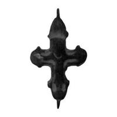

Catalog › CE-0282 · KIR2023-13
Valvă de encolpion de bronz cu Răstignirea, cat. 13, Muzeul Kırklareli
sec. IX–XII (801–1200) · loc necunoscut · Muzeul Kırklareli (Kırklareli Müzesi), Turcia, inv. 2011/168(A)
single valve of a reliquary cross, bronz; c. IX–XII (801–1200); find spot unknown; kept at Muzeul Kırklareli (Kırklareli Müzesi), Turcia.


Identificare
- Categorie
- Valvă izolată
- Material
- Bronz
- Tehnică
- Turnare în relief
- Stare
- Fragmentară
- Dimensiuni
- Î 44 × L 25 mm
Iconografie
- Descriere avers
- Hristos răstignit, în relief, stilizat; mâna dreaptă, bătută în cuie, e ruptă; capul e deformat, gâtul se distinge; la ambele capete ale brațului vertical sunt inele pentru atârnare.
- Limba
- Fără inscripție
Datare și atribuire
- Datare
- sec. IX–XII (801–1200)
- Tipologie
- Pitarakis 2006, tip VIII
Descoperire
- Context
- Colecție (fără context)
- Coordonate
- 41.7351° N, 27.2252° E
- Precizia locului
- Loc de păstrare (loc de descoperire incert)
Păstrare și referințe
- Colecție
- Muzeul Kırklareli (Kırklareli Müzesi), Turcia
- Nr. inventar
- 2011/168(A)
- Bibliografie
- S. Uygun Yazıcı, Kırklareli Müzesi Bizans Dönemi Madeni Haçları, în „Art-Sanat”, 20, 2023, p. 613–640 [Uygun Yazıcı 2023], p. 627, cat. nr. 13, reprodusă la G. 13 (p. 628). DOI: 10.26650/artsanat.2023.20.1290437
- Figura
- G. 13
- Planșe
- Uygun Yazıcı 2023, p. 628
- Analogii
- Piesă din Serbia, sec. XI–XII (Pitarakis 2006, fig. 17); Komana, sec. IX–XII (Acara Eser, cat. 9), după Uygun Yazıcı 2023
- Observații
- Datare în catalog: sec. IX–XII; în concluzii, crucea e încadrată în perioada bizantină timpurie și mijlocie (sec. VI–XIII). S-a păstrat numai fața. Intrat în muzeu prin cumpărare; sursa spune că toate piesele provin din Kırklareli și districtele din jur, fără loc precis de descoperire. Locul descoperirii nu e cunoscut cu precizie; punctul de pe hartă marchează locul de păstrare (Muzeul Kırklareli), nu locul descoperirii. Coordonate: nu sunt date în sursă.
Citare: Corpus Encolpiorum, CE-0282, Valvă de encolpion de bronz cu Răstignirea, cat. 13, Muzeul Kırklareli, --root/piese/KIR2023-13/ (accesat 2026-10-17).